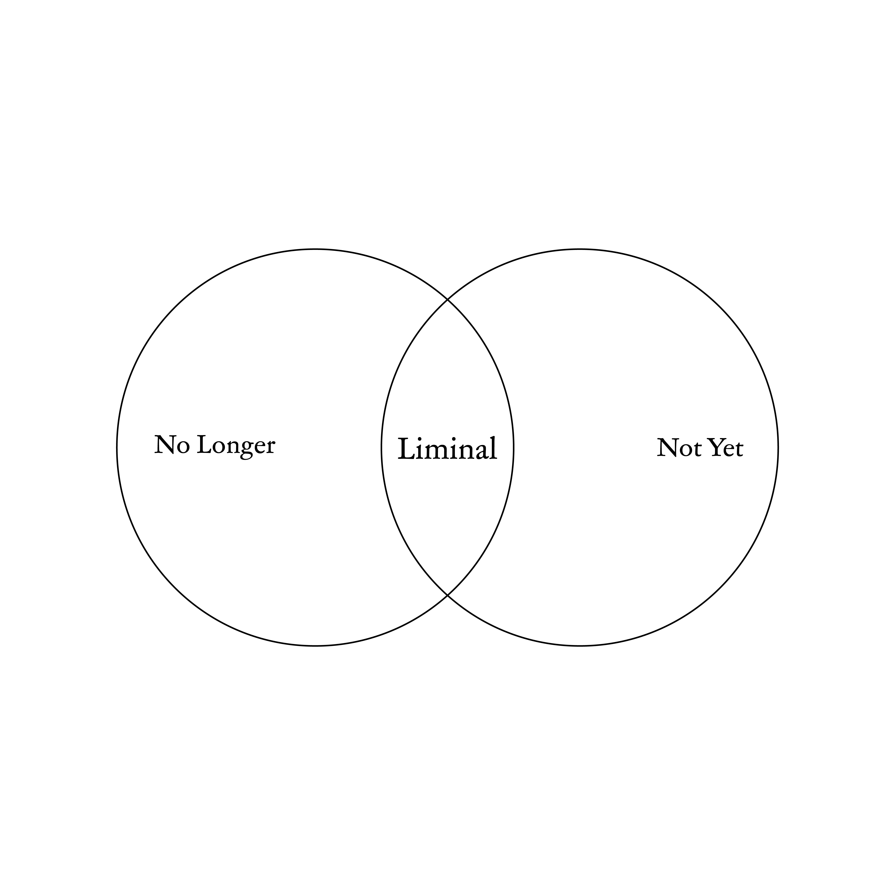

[img 001] — Liminal Interval, full view
Liminal
Interval
Can an identity assigned at birth claim authority over a self that is continually in flux?

[img 002] — Liminal
Overview
Liminal Interval questions whether a birthplace can define identity in absolute terms. The self is not fixed — it is continuously shaped through shifting environments, languages, and communities. Born in Korea and having spent the formative years of self-construction in Japan, the experience of moving between two culturally and historically entangled contexts made it impossible to accept nationality as a stable or sufficient account of who one is.
Three concepts structure the work and give it its title. Liminal derives from the Latin limen, meaning threshold — the boundary between two states, neither fully one nor the other. Metamorphosis names the fragile interval between given and constructed definitions of the self: not mere change, but the dissolution and reconstruction of structure. Interval holds these two together — unresolved time, a provisional space in which inherited structures loosen, allowing identity to be reconsidered rather than simply accepted.
Materially, the work required a form that could hold structure without fixing it. Metal wire frame traces a shape while remaining permeable. Silkscreen-printed fabric carries national symbols pressed onto a surface that drapes and folds — inscribed, but never rigid. Together, the two materials enact the work's central argument: identity has structure, but that structure is never finally closed.
[img 003] — Pupa as conceptual figure
Research Question & Theoretical Answer
Can an identity assigned at birth claim authority over a self that is continually in flux?
Victor Turner — Liminality
Turner's account of liminality offers the first framework. In his tripartite model of rites of passage — separation, liminal phase, reincorporation — it is the middle phase that concerns this work. In the liminal phase, existing structures dissolve and identity becomes temporarily undefinable: the subject has left one position but has not yet entered another.
The pupa embodies this exactly. Inside the chrysalis, the organism is neither larva nor butterfly — inherited form gives way before a new form can emerge. Liminal Interval takes this threshold as a conceptual position: not a failure to be defined, but a refusal to be defined prematurely.
Colomina & Wigley — The Designed Self
Colomina and Wigley deepen this argument by locating identity formation in the material world. Design, they propose, does not serve the human — it produces the human. The self is constituted through its ongoing relationship to environments, objects, and systems rather than prior to them.
If the self is continuously formed through shifting contexts, it cannot be something assigned once and carried forward unchanged. The environments, languages, and communities one moves through are not backdrop — they are the very material through which identity is constructed.
Boym — Restorative & Reflective Nostalgia
Boym's distinction between restorative and reflective nostalgia illuminates the ideological stakes. Restorative nostalgia presents itself not as longing but as truth — its central plot is the return to origins, a singular home to which one rightfully belongs. This is precisely the structure nationality imposes: origin as destiny, birthplace as authoritative definition of the self.
Reflective nostalgia resists this by dwelling in the longing without resolving it. Liminal Interval occupies this reflective position — the pupa as a space of deferral, where nationality's claim on identity is suspended rather than resolved.
Turner names this the liminal phase. Colomina and Wigley locate it in the material encounter between self and environment. Boym finds it in the refusal to return. The interval between given and constructed identity is not a problem to be solved but a condition to be inhabited honestly.
[video 004] — Structural development
Process & Reflection
The work began with research into the national symbols of two countries that have most directly shaped identity — Korea and Japan. Korea is the nationality by birth; Japan is where the formative years in which cultural codes, language, and sensibilities are formed were spent. The two countries share a long history of conflict and entanglement, and within that history, the symbols of one country came to carry pain for the other.
This historical context led to a deeper investigation into the visual histories, symbolic structures, and political meanings of their flags — a process of understanding how abstract notions of ethnicity and belonging are compressed into a single visual symbol. The graphic silkscreen-printed onto the fabric is the result of imagining what a symbol rooted in both might look like.
From Symbol to Form
The form developed from questioning how flags are typically displayed — raised high on poles, seen from a distance. Connecting the idea that human communities historically formed around temporary shelters with the pupa as a figure of protection and transition, the work evolved into a human-scale structure: part chrysalis, part tent.
Three wire frames were designed to create an enveloping form, with spatial possibilities explored through Processing code before being realised as a physical miniature and finally at human scale. The pattern was printed on the inside of the fabric only — to suggest that identity formation is an interior process, one in which external definitions dissolve and something chosen, rather than assigned, begins to take shape.
Looking back, the symbolic logic of the flag motif needed more critical development during the process. The repetition of flag symbols was not communicated clearly enough in the final work. Building a physical model earlier would have allowed for greater refinement of material and structural detail before committing to the large-scale realisation.

[img 005] — Flag graphics

[img 006] — Flag of Japan

[img 007] — Flag of South Korea